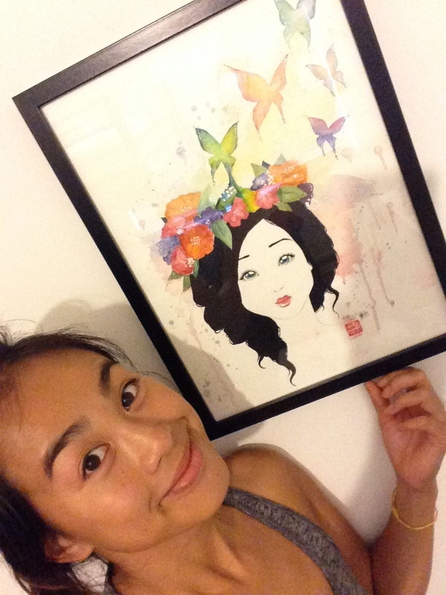
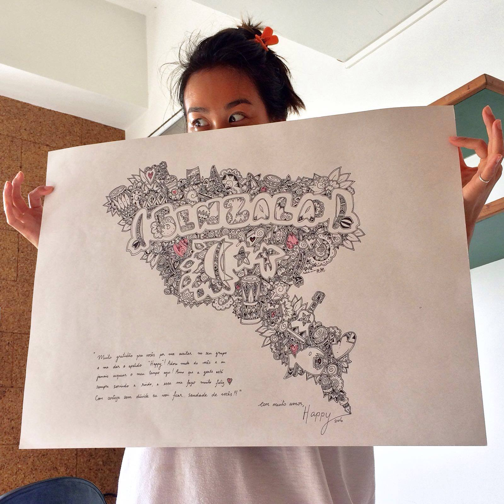

On this website you will find some samples of my previous work and projects. I don't have so much time to write a lot here so I'm just typing right now just to fill some space.. so I guess you can stop reading if you want. It's just to make the page look fuller. tap tap tap tap I guess I could just start typing random letters but words probably look better than a lot of random letters. Ok I think it looks better now.. I will just copy and paste this to all the pages. APologise its not very interesting to read. THanks.I don't have so much time to write a lot here so I'm just typing right now just to fill some space.. so I guess you can stop reading if you want. It's just to make the page look fuller. tap tap tap tap I guess I could just start typing random letters but words probably look better than a lot of random letters. Ok I think it looks better now.. I will just copy and paste this to all the pages. APologise its not very interesting to read. THanks.I don't have so much time to write a lot here so I'm just typing right now just to fill some space.. so I guess you can stop reading if you want. It's just to make the page look fuller. tap tap tap tap I guess I could just start typing random letters but words probably look better than a lot of random letters. Ok I think it looks better now.. I will just copy and paste this to all the pages. APologise its not very interesting to read. THanks.
Stumbled upon this video the other day and thought it's worth a look at! The roses look great and it's perfect for those learning to paint with watercolour! I don't have so much time to write a lot here so I'm just typing right now just to fill some space.. so I guess you can stop reading if you want. It's just to make the page look fuller. tap tap tap tap I guess I could just start typing random letters but words probably look better than a lot of random letters. Ok I think it looks better now.. I will just copy and paste this to all the pages. APologise its not very interesting to read. THanks.
 Finally got my painting framed! It definitely looks much better in a frame that out of one! I really must go and get more frames for my paintings! Ikea is the best place for frames if anyone is ever looking to buy frames for their art work. I don't have so much time to write a lot here so I'm just typing right now just to fill some space.. so I guess you can stop reading if you want. It's just to make the page look fuller. tap tap tap tap I guess I could just start typing random letters but words probably look better than a lot of random letters. Ok I think it looks better now.. I will just copy and paste this to all the pages. APologise its not very interesting to read. THanks.I don't have so much time to write a lot here so I'm just typing right now just to fill some space.. so I guess you can stop reading if you want. It's just to make the page look fuller. tap tap tap tap I guess I could just start typing random letters but words probably look better than a lot of random letters. Ok I think it looks better now.. I will just copy and paste this to all the pages. APologise its not very interesting to read. THanks.
The finished product of a card I did for a friend who was leaving the country. I don't have so much time to write a lot here so I'm just typing right now just to fill some space.. so I guess you can stop reading if you want. It's just to make the page look fuller. tap tap tap tap I guess I could just start typing random letters but words probably look better than a lot of random letters. Ok I think it looks better now.. I will just copy and paste this to all the pages. APologise its not very interesting to read. THanks.
 I did this art from my master as a good by present when I was leaving brazil. It was a goodbye present for him drawn using pen and on a cardboard. I don't have so much time to write a lot here so I'm just typing right now just to fill some space.. so I guess you can stop reading if you want. It's just to make the page look fuller. tap tap tap tap I guess I could just start typing random letters but words probably look better than a lot of random letters. Ok I think it looks better now.. I will just copy and paste this to all the pages. APologise its not very interesting to read. THanks.